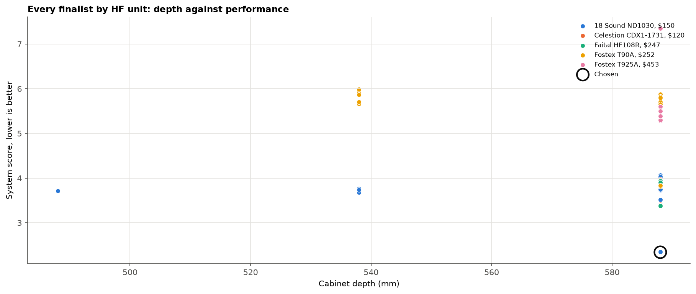

Design
Every size comes from the one inside it. The optimiser searched that chain for every HF unit, mid driver and kick driver in the catalogue, within a 600 mm depth limit.

| Step | mm (cm² for areas) | Set by |
|---|---|---|
| HF unit body cylinder | 65 | 18 Sound ND1030, flange ignored |
| Mid phase plug | 69 | body cylinder plus a 2 mm sleeve |
| Smallest mid cone allowed | 110 | 1.6 times the plug |
| Mid cone used | 134 | Beyma 6MCF200Nd |
| Mid throat, outer | 113 | Sd / 2.2 as an annulus round the plug |
| Mid mouth | 220 | os law, 150 mm long |
| Mid can | 232 | mouth or driver frame plus the wall |
| Low centre body at the throat | 296 | covers the 15 inch cone in front of it |
| Low throat area | 385 | 2.3:1 compression |
| Low mouth | 560 | x 600 mm, exponential law to the can |

Phase plugs shape the expansion
Each horn is designed as an open-area law. The inner body is always subtracted. In the mid, the plug is fixed by the HF unit (its body plus a 2 mm sleeve) and tapers to the HF horn mouth; the outer wall is solved so that wall minus plug follows the law. In the kick horn the walls are flat panels, so the centre body is solved instead: its radius is whatever leaves the open area on the law, from the throat to the mid can.


HF units
Bullet super tweeters and 1 inch compression drivers, sized by their body cylinder only (flanges are cut off or ignored). A compression driver gets a small printed horn whose outside is the plug's tapering tip, the way Funktion-One puts the HF at the centre of the mid.
| Unit | Type | Body (mm) | Lowest crossover (kHz) | Price each | Best system score |
|---|---|---|---|---|---|
| 18 Sound ND1030 | compression | 65 | 1.8 | $150 | 2.34 |
| Celestion CDX1-1731 | compression | 82 | 2.2 | $120 | 3.40 |
| Faital HF108R | compression | 87 | 1.3 | $247 | 3.38 |
| Fostex T90A | bullet | 60 | 7.0 | $252 | 3.82 |
| Fostex T925A | bullet | 82 | 6.0 | $453 | 5.28 |
| JBL 2402H | bullet | 119 | 3.0 | none found | excluded: No current price or listing found (probably discontinued). Checked 2026-11-17. |

Rule: among designs within 0.25 of the best score (2.34) and at most 600 mm deep: the cheapest HF unit, then the shallowest cabinet. Chosen: 18 Sound ND1030 with the Beyma 6MCF200Nd and the Eminence DELTA-15LFA.
The search
- HF and mid. Four area laws, three throat compressions, five mouths (220 to 380 mm), five lengths (120 to 260 mm), crossovers f1 of 250, 315, 400 and 500 Hz, and each HF unit's upper crossovers. Only cones at least 1.6 times the plug, and the 60 most efficient per pool plus every verified driver. 123,344 rows kept. Score: in-band variation, coverage mismatch with the HF unit, a loading penalty when the mouth is smaller than c / (pi f1), an output floor, and a reward for a wider mid band.
- Kick. The best mids became the end of the centre body in kick horns of three laws, three mouth widths, three heights and three lengths, at most 600 mm deep. Every 15 inch with at least 4 mm Xmax that is not an instrument or coaxial driver: 1,441 rows passing -3 dB at or below 80 Hz and at least 96 dB. Score: variation from 80 Hz to 1.4 f1, coverage match with the mid, low Qes for horn loading, and an output penalty below 100 dB.
- System. The best combinations for each HF unit through the full crossover, scored on on-axis flatness, off-axis smoothness and bass extension.